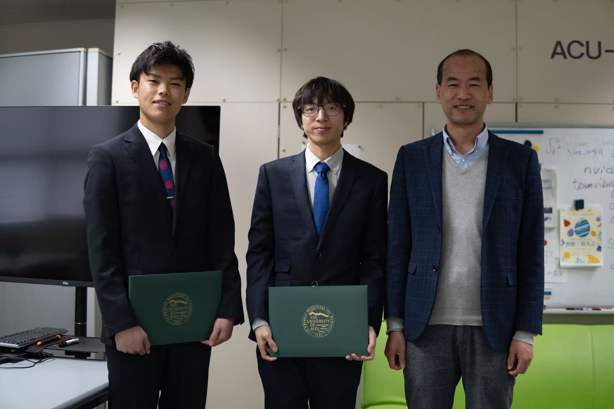
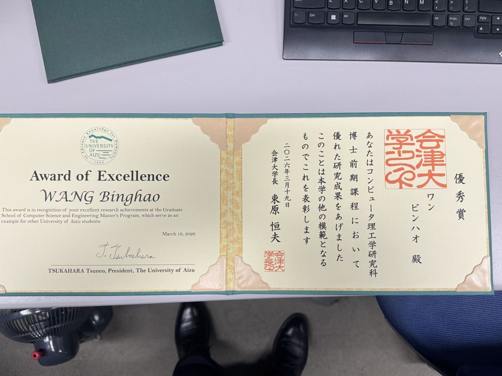
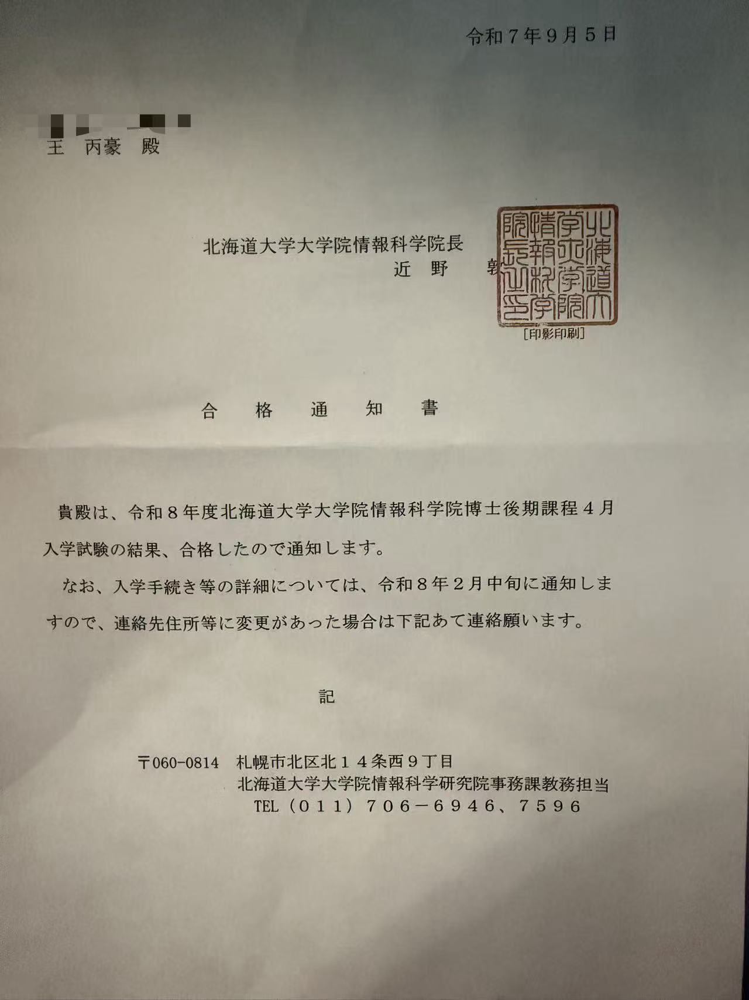
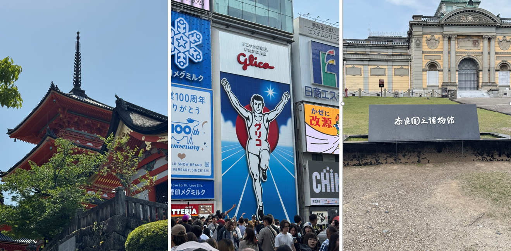
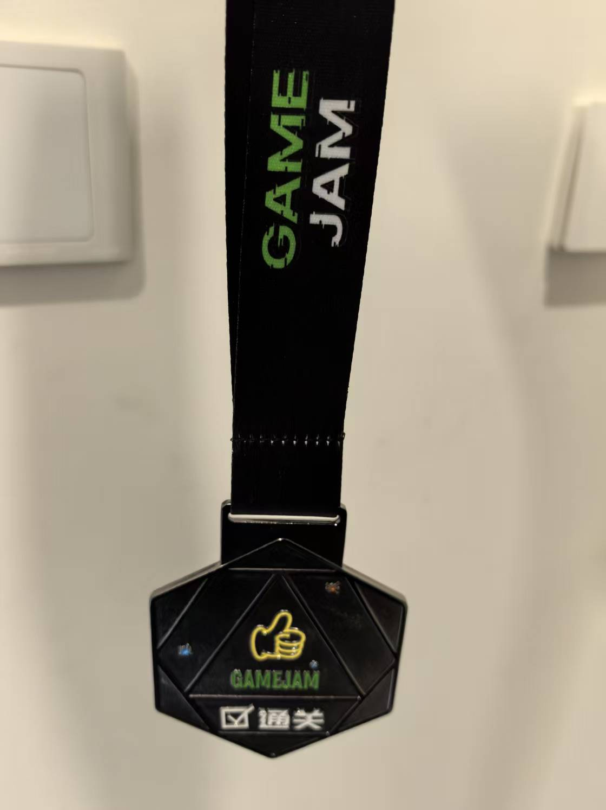
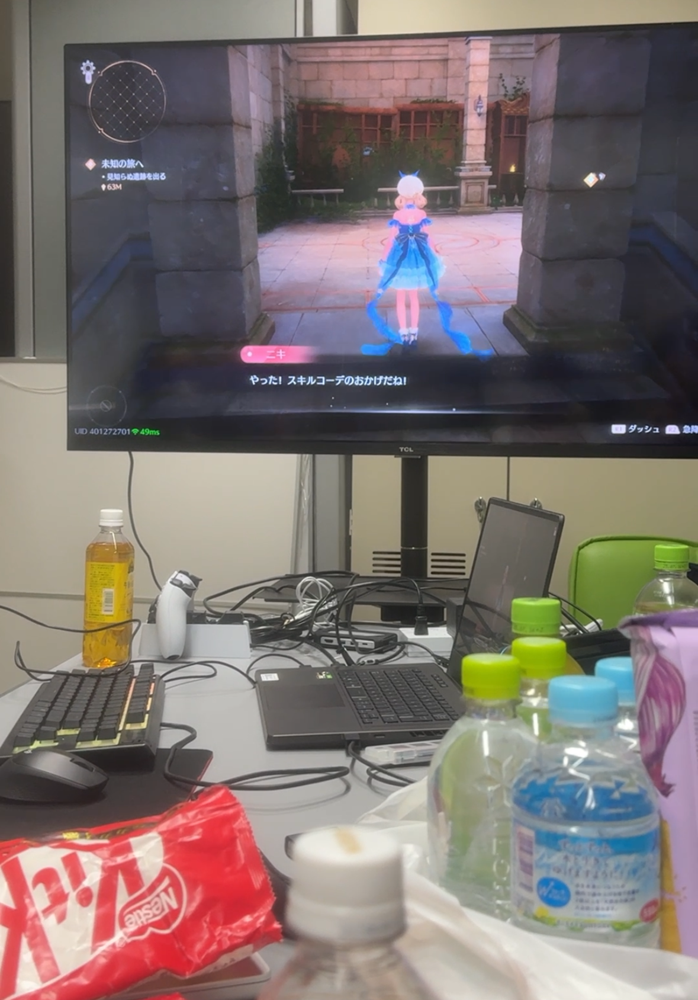
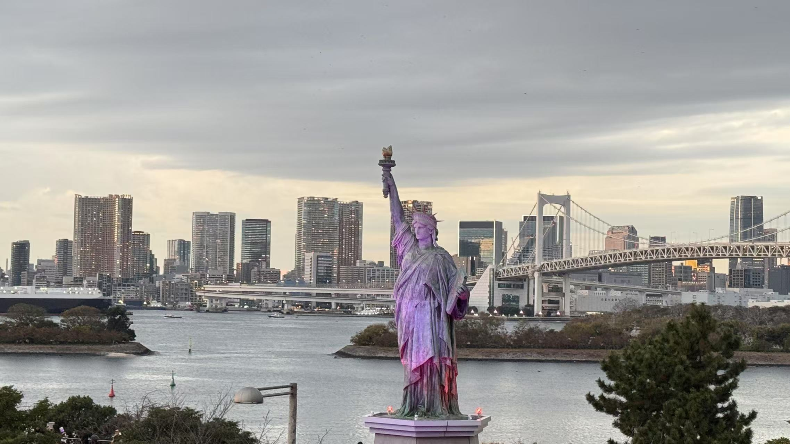
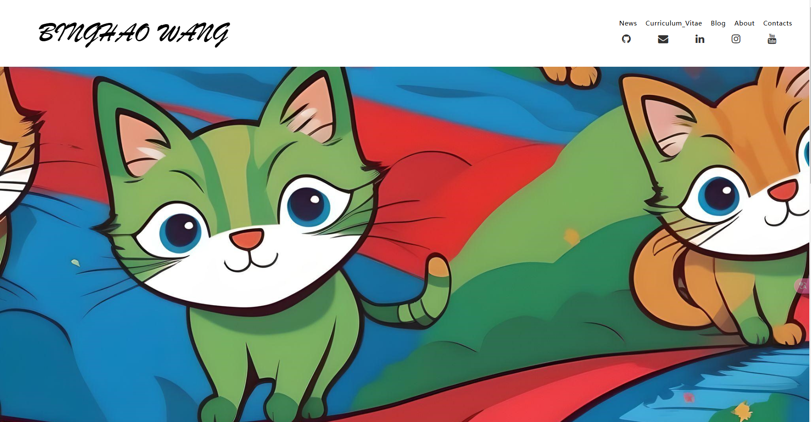

News
I am working as a research assistant for the NII-LLMC consortium. The project name is “Construction of a Benchmark for Evaluating Multiple Hazardous Events Reflecting Diverse Human Values to Improve the Safety of LLM-jp-vl.”
I have become a D-RED researcher at Hokkaido University. （北海道大学総合イノベーション創発機構データ駆動型融合研究創発拠点研究員）

I’m incredibly happy to say that today is my graduation day.
Over the past two years, my professor taught me how to take my first real steps into academic research. With his guidance and support, I published two journal papers and also had the opportunity to participate in several events related to the game industry, including the famous Tokyo Game Show. Along the way, I also created several games and other projects of my own.
More importantly, during these two years, I met an amazing group of friends, many of whom are PhD students or postdoctoral researchers. They gave me tremendous support in my academic journey, as well as countless valuable suggestions. I still remember the nights when you stayed with me fixing bugs until very late. Beyond research, we also traveled together during the holidays and shared so many unforgettable moments.
During these two years, I managed to visit 22 of Japan’s 47 prefectures. So many places across Japan now hold memories that are deeply meaningful to me.
Time really flies. These two years have given me far more than just a degree — they gave me research experience, projects, friendships, journeys, and memories that I will always treasure.
I will never forget this chapter of my life.

I received an award for academic excellence among the University of Aizu's Class of 2026 graduates. This honor is bestowed upon top-ranking students (specifically the top four at the University of Aizu this year) across all undergraduate, master's, and doctoral programs. I am also deeply honored to be the only international student among the recipients; this serves as a meaningful validation of my hard work over the past two years.
I received a next-generation AI scholarship, which will support my PhD studies.

I passed the PhD entrance examination of the Graduate School of Information Science and Technology at Hokkaido University.

Travel to Kansai area (Kyoto, Osaka, Nara) during Golden Week

I participated in an official Unity Game Jam (where the goal is to create a game within a week) and won an official medal.

On the New Year's Day, I went to Sensoji Temple to draw a fortune, and it was a good fortune.

Today is the Christmas party held in advance in the lab. We played games and ate together. Because the lab also has a lot of research in the field of games, whenever there is a party, everyone will sit together and play games, which is very interesting.

I came to Odaiba in Tokyo. This is my third time here. There is the Statue of Liberty in Japan and a very large Gundam model. The most important thing is that it is really beautiful. I think this is the most beautiful place in Tokyo.

I created my own website, where I will update my projects, and my chatter. This is the beginning of my website.